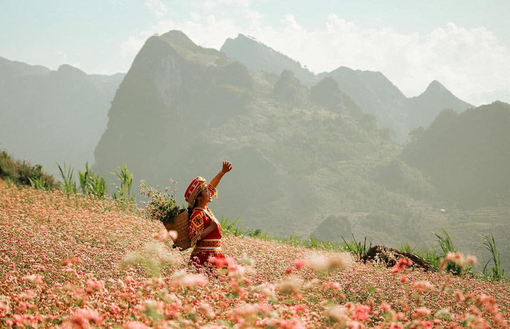
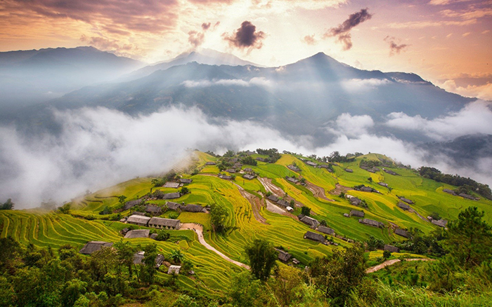

Hà Giang - Mùa Hoa Tam Giác Mạch
"Hành trình chinh phục cực Bắc tổ quốc luôn để lại những xúc cảm đặc biệt trong lòng những ai đam mê xê dịch. Nơi đây mở ra khung cảnh hùng vĩ của cao nguyên đá tai mèo xám ngắt, điểm xuyết sắc hồng phớt dịu dàng của những triền hoa tam giác mạch bạt ngàn trải dài khắp chân mây."



Điểm nổi bật của Tour
- Chinh phục cung đường huyền thoại: Vượt qua đèo Mã Pí Lèng hiểm trở bậc nhất, ngắm nhìn dòng sông Nho Quế xanh ngọc bích uốn lượn dưới hẻm vực Tu Sản sâu hun hút.
- Khám phá văn hóa bản địa: Thăm dinh thự vua Mèo tại Sà Phìn, cột cứu quốc Lũng Cú cực Bắc và giao lưu văn hóa độc đáo cùng đồng bào dân tộc vùng cao.
- Check-in mùa hoa đặc trưng: Trải nghiệm sắc màu rực rỡ của các thung lũng hoa tam giác mạch nở rộ khắp các bản làng Đồng Văn, Quản Bạ.
Lịch trình tóm tắt (3 Ngày 4 Đêm)
- Đêm 1 & Ngày 1: Khởi hành đi Hà Giang - Check-in cổng trời Quản Bạ - Núi đôi Cô Tiên - Phố cổ Đồng Văn.
- Ngày 2: Chinh phục cột mốc Lũng Cú - Khám phá Dinh thự họ Vương - Trải nghiệm đèo Mã Pí Lèng - Đi thuyền sông Nho Quế.
- Ngày 3 & Đêm về: Tham gia chợ phiên vùng cao - Mua sắm đặc sản - Lên xe khởi hành về lại điểm xuất phát, kết thúc hành trình.
Giá trọn gói cho 1 khách:
2.500.000 VNĐ